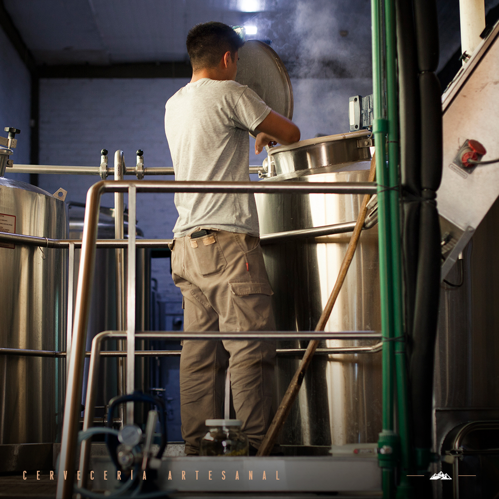

PIRCA
Cerveceria Artesanal
SOBRE NOSOTROS
Fundada en 2005 contamos con el mejor staff cervecero con un incondicional amor a primera pirca


FABRICACIÓN
Tomamos horas de nuestra vida,
le añadimos todo nuestro mayor esfuerzo,
dos tercios de pasión y el sabor de nuestras mejores materias primas.
En Pirca no solo somos expertos en lo que hacemos,
también somos unos fervientes apasionados de darle a nuestras cervezas
el mejor sabor para que cuando la tomes,
la disfrutes tanto como nosotros al hacerla
